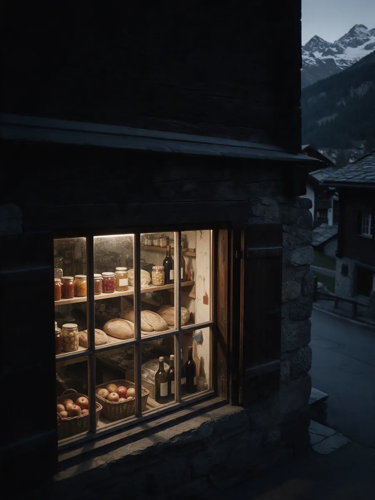

IT and software
A computer engineer by training, I worked for more than twenty years as a developer on a large IT project. I translate, post-edit and check technical content for major IT companies.


Nothing gets lost on the way. Philippe Noth, freelance translator in Guttet, Valais: from German and English into French, for Switzerland or for France.
English French
An old mule track crosses the pass.Un ancien chemin muletier franchit le col. Whoever takes it changes not only valleys, but languages.Qui l’emprunte ne change pas seulement de vallée, mais aussi de langue. A text makes the same journey.Un texte fait le même voyage. Nothing may be lost on the way: not the meaning, not the tone, not a single detail.En chemin, rien ne doit se perdre : ni le sens, ni le ton, ni le moindre détail.
I work for direct clients and for translation agencies, on one-off projects or over the long term.
From German and English into French: websites, software, magazines, documentation, corporate communication. The goal never changes: a text that reads as if it had been written in French.
Bilingual revision: I compare the translation with the original and check meaning, terminology and consistency. Monolingual proofreading: I correct the spelling, grammar and typography of the French text.
A machine-translated text is still a draft. I rework it segment by segment until it is accurate, consistent and pleasant to read.
If you are based in Switzerland, I can travel to help French, German and Italian speakers understand each other. I speak and understand all three national languages, as well as English.
Subjects I know from the inside, because I have worked in them or written about them.
A computer engineer by training, I worked for more than twenty years as a developer on a large IT project. I translate, post-edit and check technical content for major IT companies.

I worked with Saas-Fee Tourismus on its destination magazine 4545.

Daily translations from German into French for a leading European retailer. Other retailers also entrust me with their texts.

As the author of two hiking guides published by Éditions Slatkine, I know the vocabulary of the terrain, the map and the trail.
For Translators without Borders, I translated documents about the challenges of the Fairtrade coffee industry as a volunteer.
Since 2018, one of the world’s largest translation agencies has entrusted me with IT projects.
The same German text does not become the same French in Lausanne and in Lyon. Choose your readers.

My name is Philippe Noth. A computer engineer who speaks four languages, I worked for more than twenty years as a developer on a large IT project. I have put that experience to work in a second career as a freelance translator and reviser, under the name Valais Traductions.
I have also written two hiking guides, published in French by Éditions Slatkine in Geneva. They describe solitary routes in the Swiss Alps, in prose meant to be a pleasure to read.
Finally, I used to run Web Bloopers, a collection of unintentionally funny translations found on the Internet. It lives on here: open the bloopers.
My CV is available on request.

Randonnées pour grizzlys et autres animaux solitaires Valais Alps, 2013, in French

Randonnées pour grizzlys et autres animaux solitaires Alps and Prealps of Vaud, Fribourg and Bern, 2017, in French
Do you need a flexible and meticulous linguist, or want to make sure an existing translation contains no errors or inconsistencies? Write to me to check my rates and availability.
Valais Traductions, Philippe Noth